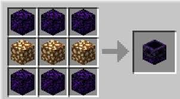
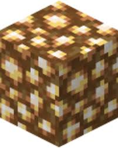

Materiales Necesarios:
- Ancla de regeneración (abilitada desde la versión 1.16.0 de mineicraft)
- Piedra luminosa (se consigue en el nether (inframundo) )
- Portal al Nether ( es necesario estar en el inframundo o si no el ancla explotara como lo hacen las camas en el nether)
- Una mesa de crafteo
Procedimiento:
- Es necesario que craften el ancla de regeneración.

- Cargue el ancla con piedra luminosa.
